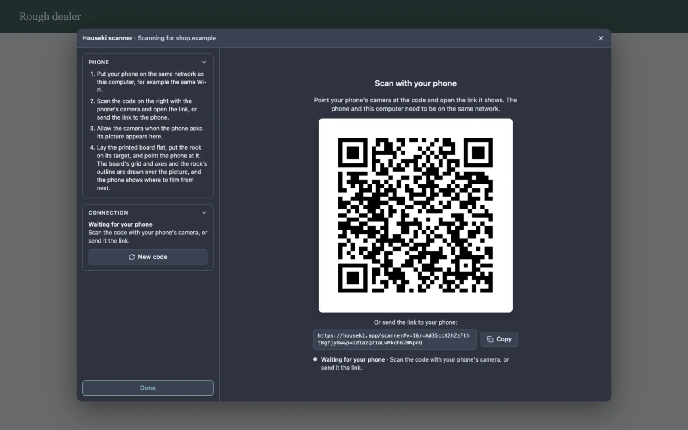

You can add the Houseki scanner to your own website. A visitor clicks a button on your page, the scanner opens in a window over it, they scan their rough with their phone, and when they click Done your page receives what was scanned. It is the same scanner as Rough scan in the studio, which opens it the same way.

The scanner does not build a 3D model of the rock yet. For now your page receives whether a phone connected and what it measured: the board, where the rock stands on it, and which sides it was filmed from. The model will be added to the same result when it is ready.
Include the script, then open the scanner from a button:
<button id="scan-rough" type="button">Scan your rough</button>
<script src="https://houseki.app/scanner.js"></script>
<script>
document.getElementById('scan-rough').addEventListener('click', () => {
HousekiScan.open({
onResult(result) {
// The visitor clicked Done. See "What your page receives" below.
console.log(result);
},
onCancel() {
// The visitor closed the scanner without finishing.
},
});
});
</script>That is all. The scanner window covers your page until the visitor finishes or closes it, then goes, and your page scrolls again as before. Your page needs nothing else: no account, no key and no server of its own.
If your site sets a Content Security Policy, allow https://houseki.app in its
script-src (for the script) and its frame-src (for the scanner
window).
The scanner's title bar names your website, as the visitor's browser reports it, for example Houseki scanner · Scanning for shop.example, so they know who is asking for the scan. The rest is the scanner as described in Rough scan: a code to scan with the phone, then the phone's camera live, with the board and the rock's outline drawn over it. The visitor can close it with the × in the title bar or with Esc, and finish with Done.
HousekiScan.open(options) opens the scanner and returns an object with one method,
close(). The options are:
| Option | What it is |
|---|---|
onResult(result) | Required. Called once, when the visitor clicks Done, with what was scanned. The scanner has closed by then. |
onCancel() | Called once if the visitor closes the scanner without finishing (the ×, Esc, or Close on the message shown when the scanner cannot be loaded). |
onStatus(status) | Optional. Called as the scan goes, with one of
waiting (the code is up), connecting (a phone opened the link),
streaming (its camera is showing), disconnected (the phone left; the
same code reconnects it) and error (the connection failed; the scanner says
why). |
Exactly one of onResult and onCancel is called. Calling
close() closes the scanner from your page, and then neither is called. Only one
scanner can be open at a time: HousekiScan.open throws an error while one is.
result is a plain object:
| Field | What it holds |
|---|---|
version | 1. It changes only if a field below changes
meaning; new fields can be added without changing it. |
phoneConnected | true if a phone streamed its camera
while the scanner was open. |
board | null if the phone measured nothing, else
{ found, sizeMm, targetMm }: whether the printed scanning board was found, the
size of its grid in millimetres, and the point in its middle where the rock goes. |
rock | null if the phone measured nothing, else
{ outlined, positionMm }: whether the rock was outlined, and where it stands on the
board in millimetres ([x, y, z]), or null until the phone has seen
it from enough sides to tell. |
coverage | null if the phone gave no guidance, else
{ low, middle, top, masks }: how many of the twelve sides of the low circle and of
the 45° circle were filmed, whether there is a view from above, and the full record, one number
per height, a bit for each side. |
Each part is what the phone last measured before Done, even if the phone had disconnected by then.
The result comes to your page from the visitor's own browser, so treat it as information the visitor gave you, not as proof: a visitor who wants to can change it before your page sees it.
The phone and the computer need to be on the same network, and both need an internet connection while they connect, as for Rough scan. The phone also needs the printed scanning board to measure anything (see The printed board); without it, the scanner still shows the phone's camera, and the result says a phone connected but measured nothing.